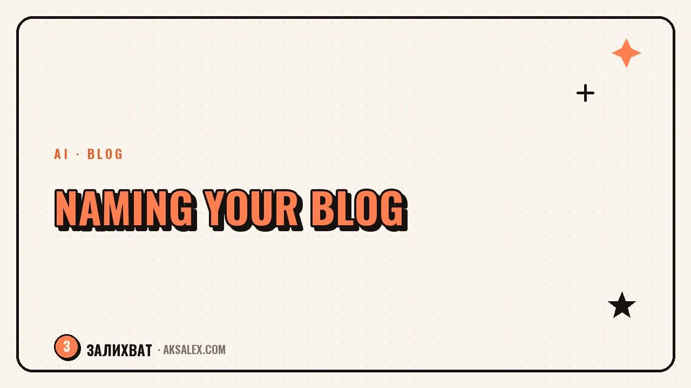

How to Name Your Blog with AI

Why Think About the Name at All If Content Is What Matters
A lot of bloggers treat naming as a formality and grab the first thing that comes to mind. That works while the blog is small. But as the account grows, an awkward or clunky name starts to get in the way: it's hard to say on a podcast, impossible to write cleanly on a business card, and the domain for a website is already taken by some curtain shop.
A good name doesn't have to be brilliant. It's enough for it to be short, easy to pronounce, and free on at least two or three social platforms at once. And that's exactly the task where AI genuinely saves time: it runs through dozens of options faster than you can open a notebook of ideas.
How AI Comes Up with Options
AI doesn't know your niche in advance, so the whole result depends on what you feed it. The more specific your input, the fewer generic words like 'ProBlog' and 'MediaSpace' you'll get back.
- Describe the topic in one sentence: not 'a blog about life' but 'a blog about editing video on your phone for beginners'
- Specify the tone: ironic, friendly, expert, bold
- Give 2-3 examples of names you like and explain exactly what you like about them
- List the words you definitely don't want to see in the name
After that, AI generates not an abstract list but options tailored to a specific task. You'll still need to filter them by hand, but the base you get is a working one.
Prompts That Produce Usable Options
One general request like 'come up with a name for a blog' almost always spits out boilerplate words. It's better to break the task into several passes from different angles.
- 'Come up with 15 short blog names about [topic] in English, no more than two syllables each'
- 'Come up with 10 names in the form of a question or a phrase from everyday speech for a blog about [topic]'
- 'Take the word [key word of the topic] and suggest 10 wordplays and rhymes based on it'
- 'Come up with 10 names that will be clear without explanation, from the name alone'
A name isn't a brand on day one. It's a working label that gathers meaning over time through your content, not the other way around.
How to Check a Name Before You Fall in Love with It
AI doesn't know whether the domain is free or the name is taken on social media right now - that part of the work you'll have to do yourself. Don't skip it: moving from a promoted but taken name to a new one is expensive.
| What to check | Where to look |
|---|---|
| .com and country domain | Any domain registration service |
| Handle availability | Instagram, TikTok, YouTube, Telegram directly in search |
| Similar names among competitors | Search for the name + the word 'blog' |
| Trademark | The trademark registry, if you plan to sell products under this name |
| How it sounds out loud | Say the name to a stranger and ask them to repeat it |
The last point seems trivial, but it's the one that catches bad options most often: if a person mishears or mangles the name the first time, your audience will do the same.
Common Mistakes in Blog Naming
Most failed names don't flop from a lack of imagination but from the same handful of traps.
- A name too narrow to let you change topics in six months
- A foreign word your audience misspells
- A pun only the author understands
- A name that duplicates an already well-known large channel in the niche
- A name longer than three words - no one remembers it on the first try
How to Pick One Option Out of Ten
Once you have a shortlist of 8-10 names that passed the availability check, the final choice is better made not alone. Show the list to three to five people from your target audience and ask which name they remembered an hour after the conversation, without prompting. It's a rough but honest test of memorability.
If several names get roughly the same number of votes, take the one that's easier to type and doesn't need explaining out loud. In the long run, convenience beats originality.
Frequently Asked Questions
Can I take a name the AI suggested without changes?
You can, if it passed the check for a free domain and handles. But more often the AI's version becomes just a base you should tweak slightly to fit your tone and pronunciation.
How many name options should I generate before choosing?
Usually 30-40 options from three or four different prompts is enough. After the availability check, at most 5-8 workable candidates will remain.
Should I use English words in the name?
Only if the audience will definitely understand and spell the word correctly. If there's any doubt about pronunciation or spelling, it's better to find a native-language equivalent.
What should I do if the name I like is already taken on Instagram?
Add a short prefix based on the blog's topic or region, or look for a similar-sounding option through AI, specifying 'suggest words that sound alike but are free.'
Should I change the name if the blog is already growing but the name is bad?
A rebrand makes sense at an early stage, while the audience is small. If the blog already has thousands of followers, it's usually smarter to keep the name and strengthen the visual presentation than to lose recognition.
Enjoyed this one? Here's what to read next. Seasonal blog topics and how AI helps you find them ahead of time instead of at the last minute.
Read the article →not by hand